✦ 应 急 食 品 ✦ 2023_2024 群成员素质拓展 (一审)
命题人: 凌华哥 审核人: 狗哥
一. 选择
共十个小题，在A,B,C,D四个选项中，有且只有一个符合题目要求
- \(-3\)的倒数是
A. \(3\)
B. \(\frac13\)
C. \(-\frac13\)
D. \(6\)
- 下列属于必然事件的是
A. 明天有雨
B. 彩票中奖号码是\(114514\)
C. 每\(367\)人中有\(2\)人生日相同
D. 原神up池抽卡十连三金
- 钟离带上生命杯时，血量为\(150\)万，其中\(150\)万用科学计数法表示为
A. \(1.5\times10^5\)
B. \(15\times10^4\)
C. \(1.5\times10^6\)
D. \(114514\)
- 如图\(\angle2=30°\),\(l_1//l_2\)，则\(\angle1\)的度数为
A. \(60°\)
B. \(45°\)
C. \(30°\)
D. \(40°\)
- 下列运算结果正确的是
A. \(x^2\cdot x^3=x^6\)
B. \((x+y)^2-4xy=x^2-y^2\)
C. \((x+y)^2=x^2+y^2\)
D. \((2xy^2)^2=4x^2y^4\)
- 假设语句“原神中所有萝莉角色都不是岩系角色”不成立，则
A. 原神中所有萝莉角色都是岩系角色
B. 原神中存在萝莉角色不是岩系角色
C. 原神中存在萝莉角色是岩系角色
D. 原神中所有岩系角色都不是萝莉角色
- 满足\(m>|\sqrt{10}-1|\)的整数\(m\)的值可能为
A. 3
B. 2
C. 1
D. 0
- 如图所示，在菱形ABCD中AB=2,∠ABC=60°,M为对角线BD上一动点，CF=BF，则AM+FM的最小值为
A. \(1\)
B. \(\sqrt2\)
C. \(\sqrt3\)
D. \(2\)
- 如图，在ㅿABC中，AB=AC,D在AC边上，过ㅿABC的内心I作IE⊥BD于E，若BD=10,CD=4，求BE的值
A. \(6\)
B. \(7\)
C. \(8\)
D. \(9\)
- 已知矩形ABCD\(≌\)矩形DEFG,DE=3,DG=4，连接BF，过B作BH⊥BF交AD于H，求DH的长度
A. \(1\)
B. \(\frac{\sqrt{15}}{16}\)
C. \(\sqrt2\)
D. \(3\)
二. 填空
共5个小题，每个小题3分
- 若使\(\sqrt{a-5}\)有意义，则\(a\)的取值范围为______
- 分解因式：\(x^3-9x=\)______
- 正方形ABCD在平面直角坐标系中的位置如图所示，已知A(2,0)，B(0,4)，反比例函数\(y=\frac{k}{x}\)过点C，则\(k=\)______
 - P为正方形ABDC中一动点，满足∠PAC=∠APC，则\(\frac{CP}{BP}\)的最大值为______
 - 在正方形EBCD中，AE=3AD，P为线段CD上一动点，当∠APB最大时，∠BAP+∠AEP=______
三. 计算
共5分
16. \(\left(\frac{1}{2}\right)^{-1}+4cos45°-\sqrt8+2024^0\)
四. 简答
共6道大题，总计50分
- (1)
凯瑟琳小姐调查了50位冒险家最喜欢的食物情况,并绘制了不完整的统计图，根据图表回答:
① \(a\)=____
② 若抽取10000人,估算最喜欢的食物为枫丹食物的人数
(2) 风起地遭受了丘丘人的袭击，现需要派遣两位资深冒险家前去处理，现有A,B,C,D四位资深冒险家，请绘制树状图或列表格，计算恰好选到A,D的概率 - 芙宁娜的小蛋糕被命题人凌华哥抢走了，请完成下面的题目，帮她追回吧，已知在⊙P，A,B,C,D为⊙P上四点，AB是直径，E是园外一点，作射线ED，此时恰好满足∠ADF=∠C，求证：
(1) 射线DE为⊙P的切线
(2) 连接BE，若BE⊥DE，BE=2，求AD的长
- 为了加强须弥地区的学业水平建设，打算从教令院购进一部分数学书和化学书，其中数学书的单价是化学书的\(\frac34\)，600摩拉所能购买的数学书比化学书多5本
(1) 求两本书的单价分别是多少摩拉
(2) 若要购进80本书，购进的化学书不少于数学书的一半，且预算仅有8400摩拉，则最多可以购买多少本化学书
- 如图ㅿABC为等腰三角形，AB=AC，D,E分别在AC,AB上，BE=CD，求证BD=CE
- 如图一，已知二次函数\(y=ax2+bx+c\)交坐标轴于A(-3,0),B(7,0),C(0,4)，二次函数顶点为G
(1) 求二次函数解析式
(2) 如图二，点P为抛物线对称轴上一动点，求PA+PC的最小值和此时点P的坐标
(3) 如图三，Q为\(y\)轴右侧抛物线上一动点，以CQ为边作矩形CQMN，QN=8，连接MG，求MG最大值与此时点Q的坐标
- 已知A(-3,0),C(2,0),E(7,0)，点P为\(y\)轴左侧任意一点，连接CP交\(y\)轴于D，满足∠CDB=∠PAC，连接EP，取EP中点F，求点C与点F距离最小值
- 请在答题卡相应位置写下原神中你最喜欢的角色的生日与你的生日，如果你没有生日，则写下“我连生日都没有，肯定是玩原神玩的！”
已弃用的题目，点击展开(不建议，通常这些题目存在问题)
- 一杯无色溶液中可能含有Ba\(^{2+}\),Cu\(^{2+}\),OH\(^{-}\),H\(^{+}\),CO\(_3^{2-}\),SO\(_4^{2-}\),Cl\(^{-}\),K\(^{+}\)几种离子，有以下结论:
①：向溶液中加入过量HNO\(_3\)，有气泡产生
②：向①中的滤液中加入过量AgNO\(_3\)溶液，有白色沉淀生成
③：向②中的滤液加入过量Ba(NO\(_3\))\(_2\)无现象
假设溶液中只有两种离子，则该溶液加入无色酚酞试剂，溶液变红的概率为
A. \(\frac13\)
B. \(\frac23\)
C. \(1\)
D. \(0\)